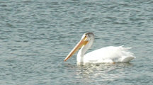
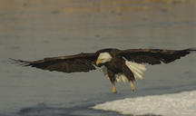
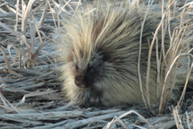
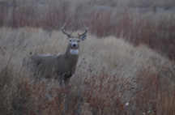
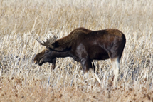

Minidoka National Wildlife Refuge
© Roger Heng 2010
Minidoka National Wildlife Refuge ,Rupert, ID

Eagle: Farmington Bay
© Tim Sommers
Farmington Bay Waterfowl Mgt Area,Farmington, Utah

Porcupine: Camas
© Roger Heng
Camas National Wildlife Refuge Hamer, ID

Red Rock Lakes a Storm
© Sue Heng
Red Rock Lakes Nat Wildlife Refuge Lakeside, MT

Elk Refuge
© Roger Heng
National Elk Refuge Wildlife Refuge Jackson, WY

Market Lake
© Roger Heng 2008
Market Lake Wildlife Refuge, Roberts, Idaho

Bear Lake
© Sue Heng
Bear Lake National Wildlife Refuge,Montpelier, Idaho

Camas
© Ray Thomas
Camas National Wildlife Refuge Hamer, ID